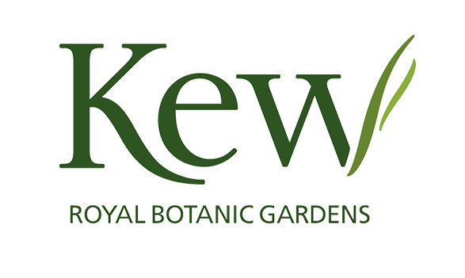

The Global Plant Council is a coalition of organisations representing
the plant, crop, agricultural and environmental sciences, across the globe, representing thousands of experts.

Kew Gardens is a botanic garden in southwest London that houses the "largest and most diverse botanical and mycological collections in the world".